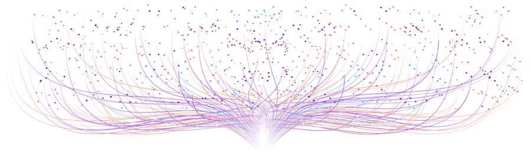

:
:
Scroll

:
Scroll
Oops, we designed this site for desktop rather than mobile viewing. Please come back on a desktop or view on a screen at least 1024 by 768 pixels in size.
Thanks and enjoy the show!